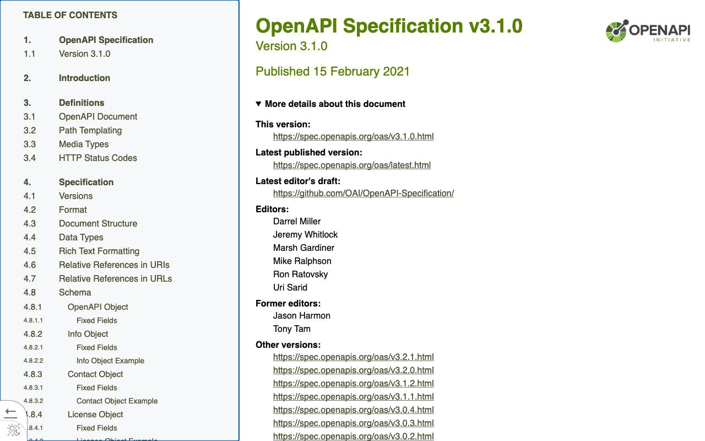

Справочник «Стандарты и сертификаты» · тема 3
Глава 5
Стандарты кода и версий:
PEP 8, SemVer, OpenAPI
У кода, версий и описаний API тоже есть стандарты: их принимают сообщества языков и проектов. В главе разобраны четыре документа, с которыми работает разработчик на Python: PEP 8, PEP 257, Semantic Versioning и OpenAPI.
- Документы
- PEP 8 · PEP 257 · Semantic Versioning 2.0.0 · OpenAPI Specification 3.1
- Уровень
- Базовый
- Где встречается
- Любой проект на Python, библиотеки, HTTP API
- Зачем это знать
- Чтобы код и версии читались одинаково всеми участниками
§1PEP 8: оформление кода на Python
PEP (Python Enhancement Proposal) — документ с предложением по развитию языка Python. PEP 8 описывает оформление кода. Его требования не проверяет интерпретатор, но ему следует стандартная библиотека и большинство проектов.

| Правило | Пример |
|---|---|
| один уровень отступа — 4 пробела | тело функции сдвинуто на 4 пробела |
| строка не длиннее 79 символов | длинное выражение переносят в скобках |
| имена функций и переменных — строчными через подчёркивание | load_profile, user_id |
| имена классов — слитно, каждое слово с прописной | BackupJob |
| имена констант — прописными через подчёркивание | MAX_RETRIES |
| импорты — в начале файла, каждый модуль на своей строке | import os, затем import re |
| между функциями верхнего уровня — две пустые строки |
Соответствие проверяют программы: линтер flake8 или ruff находит нарушения, форматировщик black исправляет оформление сам.
§2PEP 257: строки документации
Строка документации — строка в тройных кавычках сразу после заголовка модуля, класса или функции. PEP 257 задаёт её вид: первая строка — краткое описание в форме повеления, с точкой в конце.
def age(birth_date):
"""Вернуть полное число лет на сегодняшний день."""
today = date.today()
return today.year - birth_date.year
§3Semantic Versioning: номера версий
Semantic Versioning задаёт смысл трёх чисел в номере версии. По номеру пользователь библиотеки понимает, можно ли обновляться без переделки своего кода.

Версии вида 0.y.z означают начальную разработку: интерфейс может измениться в любой момент. Предварительный выпуск помечают через дефис: 1.0.0-alpha.

§4OpenAPI: описание HTTP API
OpenAPI Specification — формат описания HTTP API в файле YAML или JSON: адреса, методы, параметры, схемы данных, коды ответа. По такому файлу строят документацию, проверяют ответы сервера и создают код клиента.
До 2016 года спецификация называлась Swagger. Сейчас это имя носят инструменты: Swagger UI показывает описание в браузере, Swagger Editor помогает его писать. Действующие версии спецификации — 3.0 и 3.1.

§5Частые ошибки
§6Проверьте себя
- Что такое PEP? Обязателен ли PEP 8 для интерпретатора?
- Как по PEP 8 записывают имена функций, классов и констант?
- Как выглядит первая строка строки документации по PEP 257?
- Какую часть номера 2.4.1 увеличат, если из ответа убрали поле? Какой получится номер?
- Чем OpenAPI отличается от Swagger?
4 пробела79 символовsnake_case — функцииCapWords — классыUPPER_CASE — константыMAJOR — несовместимоMINOR — добавилиPATCH — исправили0.y.z — начальная разработкаPEP 257 — docstringOpenAPI 3.1 — APISwagger — инструментыСправочник «Стандарты и сертификаты» · глава 5Макаров Максим Николаевич